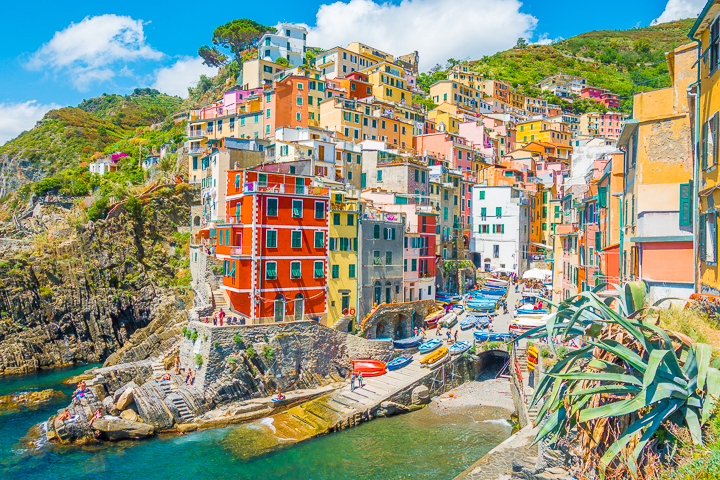

The Walk
The walk from Monterosso to Riomaggiore will take you approximately two hours, give or take an hour depending on the weather conditions and your physical shape.
Cinque Terre is also famous for hiking, especially the trails connecting the five villages. The area is part of Cinque Terre National Park and is a UNESCO World Heritage Site.
